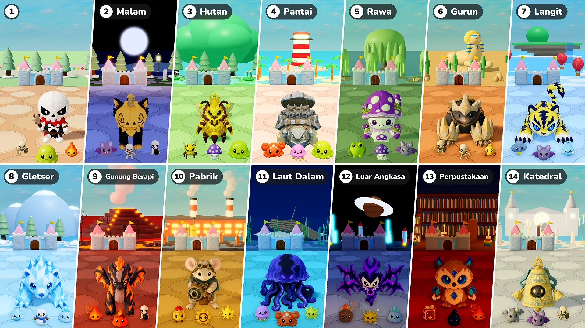

Musim 2 · Pembaruan 07 · 10 November

Pertahanan Kastel
- Tahap: Kini setiap 10 ronde adalah satu tahap. Tahap 1 adalah kota kecil seperti sebelumnya; mulai Tahap 2, tiap tahap adalah tempat yang berbeda, dengan cahaya dan cuaca, tanah dan hiasannya sendiri, serta monster, elite, dan bosnya sendiri. Setelah tempat terakhir, tempat-tempat berulang lagi dari tempat Tahap 2.
- Bos: Berubah dari satu bos tambahan tiap 10 ronde menjadi selalu satu bos, ditemani elite sebanyak bos tambahan yang dulu ada (1 di ronde 15 dan 20, 2 di ronde 25 dan 30 …). Mulai Tahap 2, bos dan elite adalah boneka dari tempat itu. Honeyqueen kini juga bisa muncul sebagai bos.
- Elite: Elite kini 1,15 kali lebih besar. Mulai Tahap 2, darah mereka bertambah 50% tiap tahap, dan bintang yang mereka jatuhkan berubah dari 10 menjadi 10 × nomor tahap (20 di Tahap 2, 30 di Tahap 3 …).
- Monster baru: 16 monster baru ditambahkan ke tempat-tempat itu (Kelelawar · Kepiting · Ubur-ubur · Katak Beracun · Kalajengking · Awan Badai · Roh Embun Beku · Manusia Salju · Slime Es · Slime Lava · Prajurit Putar · Roda Gigi · Meteor · Buku Sihir · Tetes Tinta · Gargoyle). Tab Monster dan Bos di Ensiklopedia kini dibagi per tahap.
- Augment Statistik: Augment Statistik tidak lagi muncul di ronde saat kamu memilih boneka.
- Panggilan: Memperbaiki masalah Augment Statistik yang tidak berlaku pada panggilan. Kini berlaku pada lebah Honeyqueen, pohon Sproutweet, dan Kembaran Cermin sama seperti pada boneka, dan Augment Statistik yang dipilih saat panggilan ada di arena langsung berlaku.
- Kecepatan 2×: Tombol “×2” ditambahkan di samping tombol jeda. Tekan dan pertempuran berjalan dua kali lebih cepat; tekan lagi untuk kembali ke kecepatan normal. Waktu memilih boneka dan augment serta langkah avatarmu tetap sama. Di “Main bareng”, seluruh permainan berubah siapa pun yang menekannya.
- Darah kastel: Bar darah kastel kini lebih besar, dan angka darahnya tampil tepat di samping bar.
Tahap dan tempat
Tempat-tempat mulai Tahap 2, beserta monster dan bosnya. Boneka yang muncul sebagai Bos atau Bos Besar suatu tempat juga muncul sebagai elite tempat itu.
- Tahap 2 · Malam: Kelelawar · Pemanah Tengkorak · Tengkorak Pengebom — Bos: Blissfox · Fluffles — Bos Besar: Dreadfox · Pumpcat
- Tahap 3 · Hutan: Lebah Pekerja · Jamur Beracun · Slime — Bos: Pinehog · Honeyjam — Bos Besar: Honeyqueen — Elite: Sproutweet
- Tahap 4 · Pantai: Kepiting · Ubur-ubur · Slime — Bos: Cocoblin · Pebbleshell — Bos Besar: Rocoblin · Ironshell
- Tahap 5 · Rawa: Katak Beracun · Jamur Beracun · Kelelawar — Bos: Mudpug · Poisnail — Bos Besar: Boghorn · Sporoom
- Tahap 6 · Gurun: Prajurit Tengkorak · Pemanah Tengkorak · Kalajengking — Bos: Bonis · Squishpaw — Bos Besar: Bonix · Moldozer
- Tahap 7 · Langit: Awan Badai · Kelelawar · Roh Embun Beku — Bos: Voltis · Auromarten — Bos Besar: Voltiger · Griffion
- Tahap 8 · Gletser: Roh Embun Beku · Manusia Salju · Slime Es — Bos: Glassy · Shardfin — Bos Besar: Polarrock · Prismlance
- Tahap 9 · Gunung Berapi: Bara · Slime Lava · Tengkorak Pengebom — Bos: Flamo · Ashgon — Bos Besar: Flammonyx · Embergon
- Tahap 10 · Pabrik: Prajurit Putar · Roda Gigi · Percikan — Bos: Mouseball · Tickgear — Bos Besar: Optimouse · Obscor
- Tahap 11 · Laut Dalam: Ubur-ubur · Kepiting · Percikan — Bos: Hydris · Frico — Bos Besar: Serenis · Abyzel
- Tahap 12 · Luar Angkasa: Meteor · Percikan · Slime Es — Bos: Voidren · Echowing — Bos Besar: Voidling · Noisewing
- Tahap 13 · Perpustakaan: Buku Sihir · Tetes Tinta · Bara — Bos: Melty · Briarowl — Bos Besar: Candric · Crystowl
- Tahap 14 · Katedral: Gargoyle · Kelelawar · Prajurit Tengkorak — Bos: Lilupi · Bellkin — Bos Besar: Radiant · Bellossus